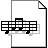

Jihyeon_OS.exe
System booted successfully.
Loading UI/UX assets & Healing aesthetics...
▶ CLICK TO INITIALIZE ◀
Works

Resume_CV
Sticky Note
X
jihyeon — designer based in Seoul → Vancouver ✈ UI/UX · mobile apps healing aesthetics ✦
Calendar
X
‹
May 2026
›
Works
_
☐
X
🎵
Mood Diary App
Music-based healing journal with generative aesthetics
🌿
Wellbeing Dashboard
Daily check-in system with minimal visual language
✦
Portfolio v1
Interactive web portfolio with cosmic theme
📐
Design System
Component library with Figma + code handoff
Resume.doc - Microsoft Word
_
☐
X
이지현
UI/UX Designer · Art Director
Seoul → Vancouver, BC | jihyeon@email.com
Experience
UI/UX Designer
2022.05 — Present
Yes24 · Seoul, Korea
도서 플랫폼 UI 개선 및 디자인 시스템 구축.
사용자 경험 최적화를 위한 모바일 앱 인터페이스 설계.
Junior Designer
2020.03 — 2022.04
Design Agency · Seoul
스타트업 브랜딩 및 전시회 비주얼 아이덴티티 디자인 가이드 제작.
Education
서울과학기술대학교
2014 — 2020
시각디자인전공 학사 졸업
Skills & Tools
•
Design:
UI/UX, Interaction, Branding, Typography
•
Tools:
Figma, Adobe Creative Suite (Ps, Ai, Id), Protopie
•
Soft Skills:
Creative Problem Solving, English Communication
Vision
감성적인 미학과 기능적인 인터페이스의 조화를 추구합니다. 단순한 도구를 넘어 사용자에게 치유와 영감을 주는 디지털 경험을 설계하는 독립적인 아트 디렉터를 꿈꿉니다.
- 2 -
Project Detail
X
All Works Index
X
HOME
INDEX
12:00 AM